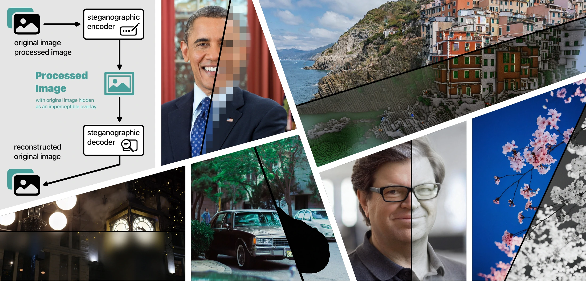
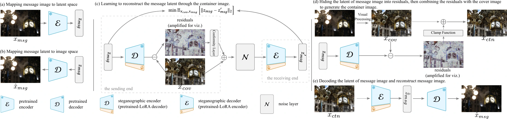
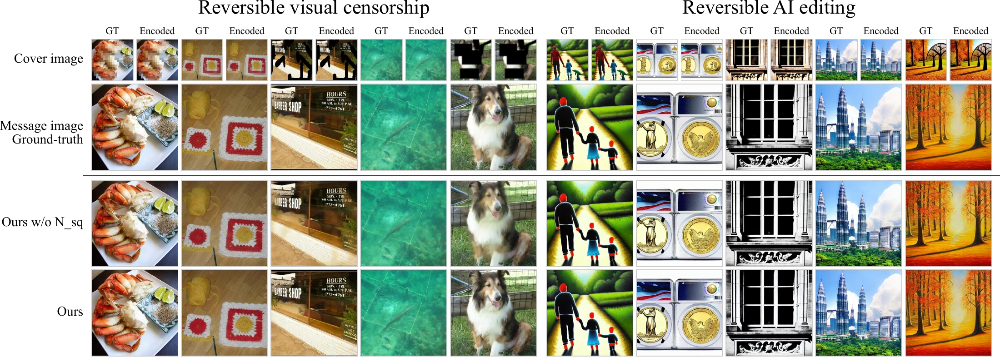

Adapt to hide
Abstract
Reversible visual processing, a novel task of image steganography by hiding and later receiving the original image from its processed version under various irreversible image processing operations, has diverse applications. Despite its potential, existing approaches are often specialized for specific tasks and face limitations in handling real-world degradations like image quantization, thus hindering their practical adoption. In this work, we find that large pretrained autoencoders (AEs) are surprisingly suitable for reversible visual processing. We thus introduce Adapt to Hide (Adapt2Hide), a novel reversible visual processing method leveraging off-the-shelf pretrained AEs and LoRA adapters. Unlike prior approaches, Adapt2Hide operates in the latent space of AEs, offering high-quality image reconstruction with minimal additional parameters (around 10% of the base AE) and efficient training with LoRA. Adapt2Hide’s design enables robust performance across a wide range of tasks, including reversible visual censorship and reversible AI editing, allowing users to retrieve the original image from censored or AI-edited images with competitive perceptual quality compared to specialized models. Additionally, Adapt2Hide demonstrates the robustness of common distortions such as cropping, quantization, and compression. Code is at github.com/aiiu-lab/Adapt2Hide.
Adapt the Stable Diffusion v1.5 autoencoder with LoRA.
Additional parameters with rank-64 LoRA in the main experiments.
Learn to reconstruct the original image’s latent representation.
How it works
Architecture
A pretrained autoencoder already knows how to reconstruct images. We adapt it to hide and recover their latent representations.

- 01
Encode the original
The frozen AE encoder maps the original message image to a compact latent representation.
- 02
Hide in the processed image
The LoRA-adapted decoder produces a signal. A conformity layer bounds the residual to ±2 on the 0–255 pixel scale.
- 03
Recover the source
The LoRA-adapted encoder retrieves the message latent; the frozen decoder reconstructs the original image.
Distortion-aware training adds noise layers for 8-bit quantization, JPEG compression, or cropping. The paper evaluates task-specific model variants for these settings.
From processed to recovered
Results
Reversible visual censorship on ImageNet-1K and reversible AI editing on InstructPix2Pix.

Reconstruction quality
Selected results from Table 1. Higher PSNR and SSIM are better; lower LPIPS is better.
| Setting / model | Visual censorship | AI editing | ||||
|---|---|---|---|---|---|---|
| PSNR ↑ | SSIM ↑ | LPIPS ↓ | PSNR ↑ | SSIM ↑ | LPIPS ↓ | |
| Clean 8-bit quantization | 32.90 | 0.9545 | 0.0417 | 32.46 | 0.9577 | 0.0341 |
| JPEG Real JPEG noise layer | 29.99 | 0.8957 | 0.0601 | 21.65 | 0.7011 | 0.3933 |
| Cropping Crop noise layer | 26.56 | 0.8153 | 0.1729 | 22.52 | 0.7177 | 0.2371 |
Message reconstructions are evaluated against the pretrained VAE’s reconstruction of the reference image. Clean images are saved and reloaded as 8-bit PNGs. In the JPEG setting, half of the encoded images are additionally saved at quality 90. See the paper for full metrics and ablations.
Reversible visual censorship
Recover embedded source content after pixelation, blur, or black masking. This experiment also illustrates why the visual appearance of censorship alone does not guarantee that information has been removed.
Reversible AI editing
Embed an image’s source in its AI-edited counterpart, allowing the source to be retrieved later and supporting editing traceability.
Beyond the main tasks
The supplementary material explores reversible style transfer, grayscale, stereo mononization, and general image steganography.
More comparisons and ablations in the supplementary material (PDF)
Cite this work
BibTeX
@inproceedings{chu2026adapt2hide,
title = {{Adapt2Hide}: Leveraging Off-the-shelf Autoencoder
for Reversible Visual Processing},
author = {Chu, Ernie and Fang, I-Sheng and Huang, Tai-Ming
and Chiu, Pin-Yen and Patel, Vishal M.
and Chen, Jun-Cheng},
booktitle = {IEEE International Conference on Image Processing (ICIP)},
year = {2026}
}Acknowledgments
This research is supported by the National Science and Technology Council (NSTC), Taiwan under Grants 114-2221-E-001-004, 114-2221-E-001-016, 114-2634-F-001-001-MBK, 114-2634-F-002-004, and 113-2634-F-002-008, and by Academia Sinica under Grants AS-IAIA-114-M10 and AS-GCS-115-M06. We thank the National Center for High-performance Computing (NCHC) of National Applied Research Laboratories (NARLabs), Taiwan, for computational and storage resources.